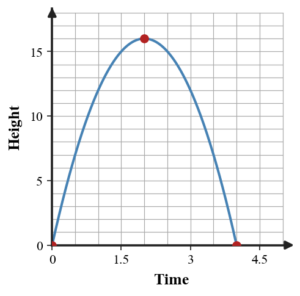
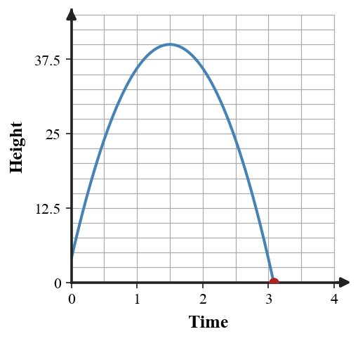
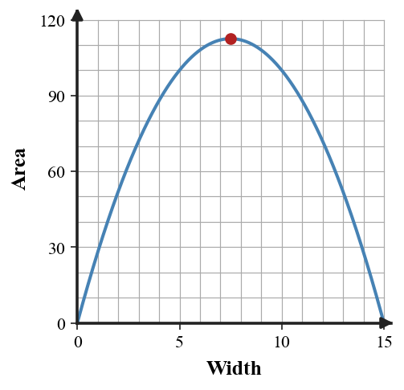

Quadratic Modeling and Optimization
Mathematical idea: Quadratic models connect intercepts, vertices, domains, and rates to real quantities such as height, area, and profit.
You will build and interpret quadratic models from contexts. You will focus on maximums, minimums, intercepts, and reasonable domains rather than treating every algebraic value as automatically meaningful.
Learning Target
Learning Target: Students will use quadratic functions to model real-world situations and interpret maximums, minimums, and intercepts.
I can statements
- I can construct quadratic models from real-world constraints, data, or key features.
- I can extend quadratic models to predict maximums, minimums, intercepts, and meaningful solution values.
- I can assess whether a quadratic model and its solutions are reasonable for the situation.
What's To Come
This is a long-range preview for future lessons. Do not solve it today. Instead, annotate it individually. Circle anything familiar, underline symbols or directions that seem important, and write notes about what information you think will be needed later.
As you annotate, ask yourself: What parts (words, symbols, graphs) do you KNOW? What parts look FAMILIAR? What parts look like jibberish?
Create With Constraints. Create or revise a quadratic task for Quadratic Modeling and Optimization using the constraints below.
Use the provided graph as one representation of height over time. Create a quadratic model with a maximum near the graph's vertex, estimate and interpret the maximum height and landing time, and state a reasonable domain.

Intro
Directions
Read the introduction aloud with a partner or in a small group. As you read, annotate the text by highlighting important ideas, circling key vocabulary, and writing short notes about connections, questions, or predictions in the margins.
Quadratic models are useful because their graphs have features that can be interpreted. Intercepts, vertices, and domains often answer the main questions in height, area, and profit situations. Choosing the useful feature depends on the context.
Optimization problems ask for a best value. The vertex represents a maximum or minimum, so it can identify the greatest height, largest area, or highest profit. The input at the vertex tells when or where that best value occurs.
Real-world inputs are not always allowed to continue forever. Time after launch usually starts at zero, and a side length cannot be negative. A model may be algebraically defined for many values while the situation only makes sense on a restricted interval.
This section uses contextual quadratic models, graphs with vertices and intercepts, tables of values, multiple equation forms, and solution statements. Each representation helps explain what the numbers mean.
Modeling also requires reasonableness checks. A negative time, an impossible length, or a prediction outside the situation's domain should be questioned even if it comes from correct algebra.
Stop and Discuss
- Which graph features are often useful in quadratic modeling contexts?
- What does a vertex represent in an optimization problem?
- Why is the domain of a real-world quadratic often restricted?
In a context, the important graph feature depends on the question being asked.
$$h(t)=-4(t-2)^2+16$$| Feature | Meaning |
|---|---|
| Vertex $(2,16)$ | maximum height |
| Intercepts | ground-level times |
| Domain | reasonable time interval |

Context: The point $(2,16)$ means the object reaches 16 units high after 2 seconds.
Example 1: Choose the Useful Feature
A ball's height is modeled by $h(t)=-16t^2+64t$. A garden's area is modeled by $A(x)=x(28-x)$.
- For the ball model, name the feature that tells when it hits the ground.
- For the garden model, name the feature that gives the greatest area.
- Explain why different questions can require different graph features.
You Try It 1: Feature Match in Context
A rocket model is $h(t)=-16t^2+80t$ and a revenue model is $R(p)=-p^2+18p$.
- Name the feature that tells when the rocket returns to the ground.
- Name the feature that gives maximum revenue.
- Explain why the same graph feature is not always the answer to every context question.
Stop and Discuss
- How did the context decide which feature you needed?
When a height is zero, the object is at ground level.
$$h(t)=-16t^2+48t+4$$ $$0=-16t^2+48t+4$$| Solution type | Use in context |
|---|---|
| negative time | reject for after launch |
| positive time | landing time |

Context: The positive zero is the landing time because time after launch must be nonnegative.
Example 2: Find When a Ball Lands
A ball is launched from a low platform with height $h(t)=-16t^2+56t+6$.
- Write the equation used to find when the ball hits the ground.
- Solve the equation using an appropriate method.
- Choose the meaningful solution and explain it with units.
You Try It 2: Another Landing Time
A tossed object has height $h(t)=-16t^2+32t+5$.
- Write the equation for the ground-contact time.
- Solve using an appropriate method.
- Choose the meaningful time and include units.
Stop and Discuss
- Why is the positive time the useful ground-contact answer?
For an area model, the maximum occurs at the vertex of the quadratic.
$$A(x)=x(30-2x)=-2x^2+30x$$| $x$ | 5 | 7.5 | 10 |
|---|---|---|---|
| $A(x)$ | 100 | 112.5 | 100 |

Context: The vertex tells which width creates the largest possible area for the fencing constraint.
Example 3: Maximize an Area Model
A rectangle is built along a wall using 36 meters of fencing for three sides. The area can be modeled by $A(x)=x(36-2x)$.
- Rewrite the model in standard form.
- Find the value of $x$ that maximizes area.
- State the dimensions and maximum area in context.
You Try It 3: Optimize a Fenced Region
A rectangle uses 40 meters of fencing for three sides, so $A(x)=x(40-2x)$.
- Rewrite the model in standard form.
- Find the value of $x$ that maximizes area.
- State the dimensions and maximum area.
Stop and Discuss
- How does the vertex connect to maximum area?
Example 4: Reasonableness of Solutions
A height model gives solutions $t=-0.1$ and $t=2.9$ seconds for when the object is on the ground.
- Identify which solution is meaningful after launch.
- Explain why the other solution appears algebraically.
- State a reasonable domain for the model.
You Try It 4: Check Model Meaning
A model gives zeros $x=-3$ and $x=11$ for possible side lengths in centimeters.
- Identify which solution is meaningful.
- Explain why the other solution is not reasonable.
- Write a reasonable domain restriction for the side length.
Stop and Discuss
- What is the difference between an algebraic solution and a meaningful solution?
Summary
Today you used quadratic models to interpret real-world situations. You focused on vertices, intercepts, and domains because those features answer context questions.
Intercepts often represent break-even values or ground-contact times, while vertices represent maximums or minimums. The form of the equation can make one feature easier to find.
A common error is accepting every algebraic solution without checking the situation. Correct algebra still needs a reasonableness check.
Strong understanding means you can choose the feature that answers the question, compute it, and explain the result using units and a reasonable domain.
Common Mistakes
- Using the wrong feature. Why it is tempting: all graph features seem important. What to check instead: match the feature to the question being asked.
- Keeping negative context values. Why it is tempting: the algebra produced them. What to check instead: check units and domain restrictions.
- Forgetting units. Why it is tempting: the number looks complete. What to check instead: state what the input and output measure.
- Maximizing with an intercept. Why it is tempting: zeros are easier to solve. What to check instead: use the vertex for maximum or minimum questions.
- Ignoring model limits. Why it is tempting: quadratics continue forever algebraically. What to check instead: state a realistic domain for the context.
Optional Future Task Reflection
Look back at the future task. Do not solve it yet. Highlight one part that makes more sense now than it did at the beginning. Circle one part that still feels unfamiliar. Write one sentence about what representation you would look at first.
Identify the vertex, intercepts, or domain feature most useful for the context.
- $h(t)=-16t^2+48t$
- $A(x)=x(20-x)$
Solve or interpret the quadratic situation for Quadratic Modeling and Optimization. Show the algebra that supports your answer.
A ball has height $h(t)=-16t^2+40t+6$. Find when it hits the ground.
What is one idea about quadratic modeling and optimization you understand better now than at the start of class? Write at least one complete sentence.
What is one thing about quadratic modeling and optimization you still want to understand or practice? Be specific — name the idea, not just "everything."